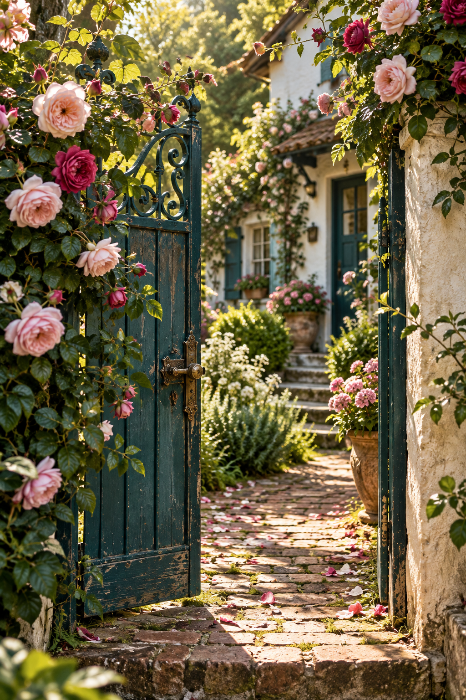
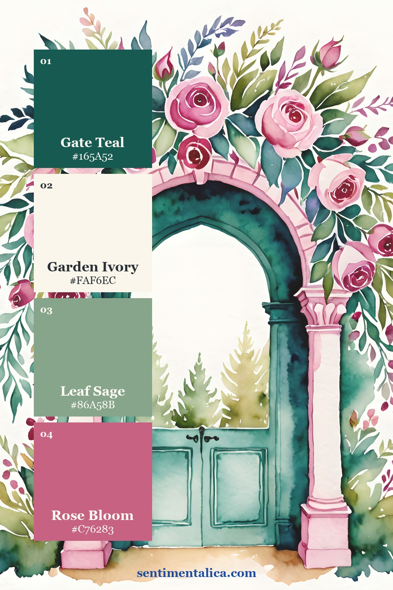
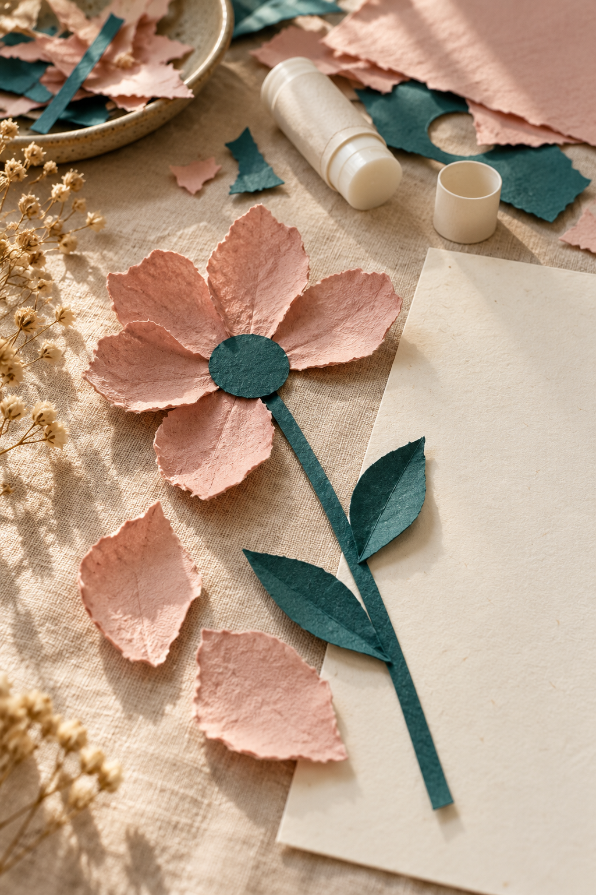
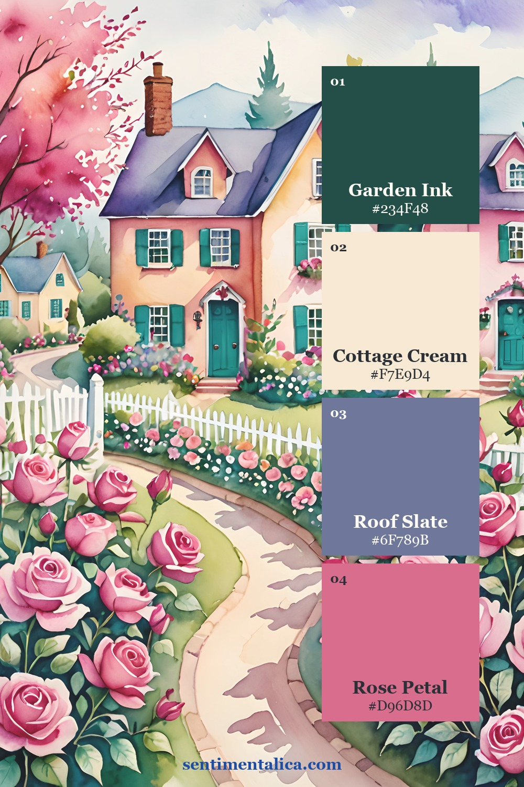
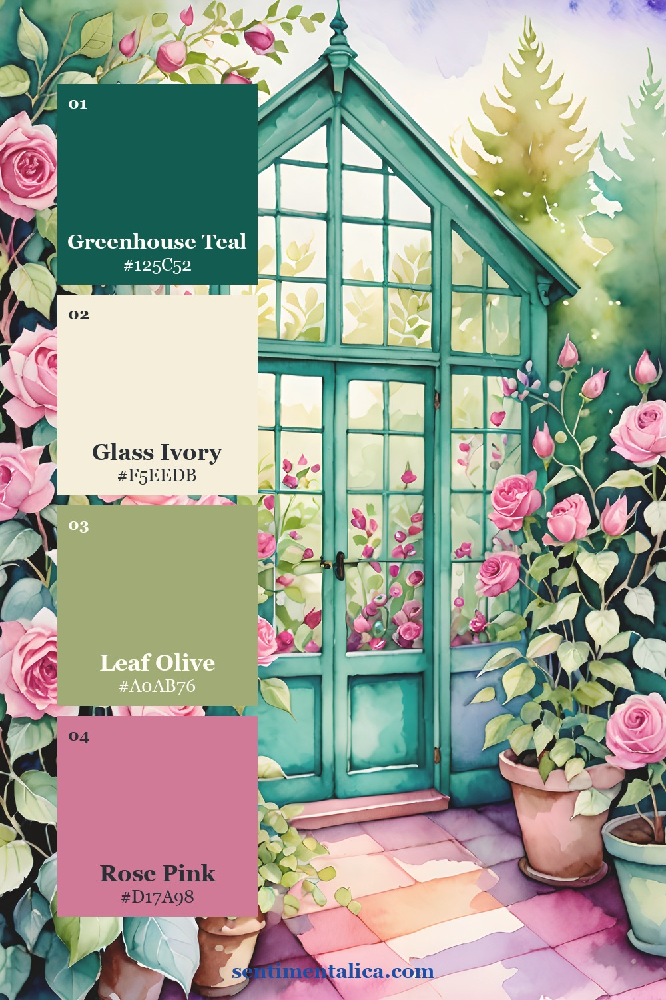
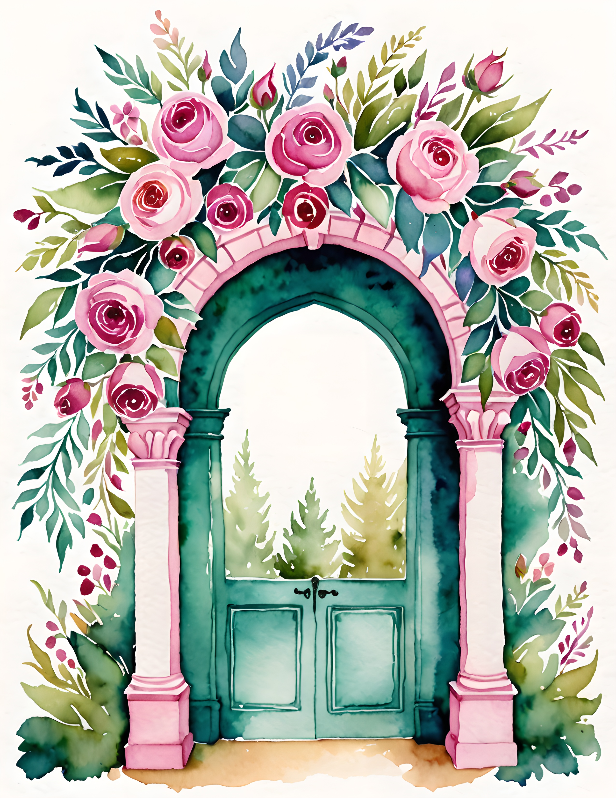
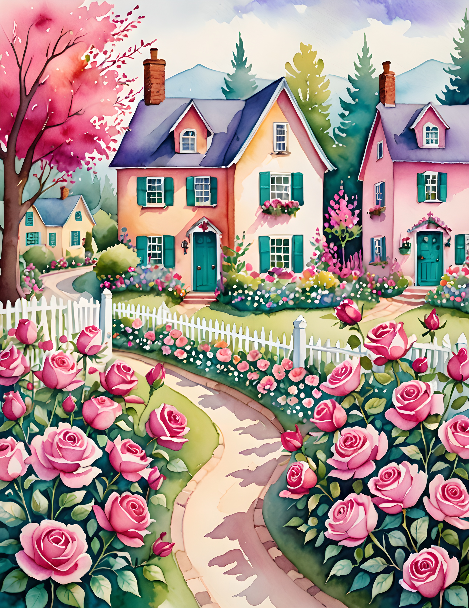
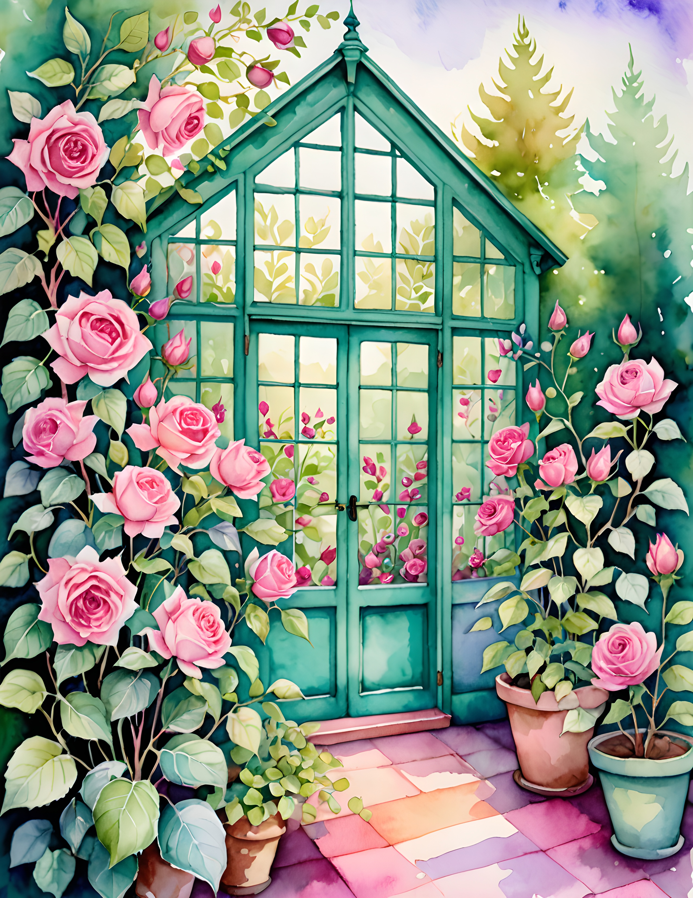

A folk floral journal page can feel handmade before you add ribbon or elaborate layers. Its rhythm comes from recurring shapes: a large bloom beside a photograph, a smaller echo near a date, and a pause of plain paper between them. Use Folk Bloom’s watercolor images as the starting point for a page about an ordinary day. Keep one handwritten label as the anchor, so the decoration has a story to gather around.

Begin with a Small Memory
Choose a moment you can describe in two or three sentences: arranging flowers in a jar, a walk past a garden gate, or a quiet afternoon making something. Set out one photograph or write the memory on a plain scrap first. Let that piece determine how much room the page needs.
Give the moment a short handwritten label, such as ‘At the kitchen window’ or ‘The long way home.’ The label should name your experience rather than explain the whole floral theme. Place it where your eye naturally begins reading, then keep it visible while you try the surrounding papers.
A repeated flower gives the page rhythm; a handwritten label gives it a home.

Repeat a Shape at Different Scales
Choose a floral detail from the artwork and decide how it will recur. You could keep one broad image as a background strip and use a smaller printed detail near the label. Printing an image smaller changes its scale; it does not make it a separate ready-made embellishment supplied by the collection.
Look for a rhythm with a little variation. The large floral area might sit at the lower edge while a small echo rests near the top. Avoid copying the same arrangement into every corner. The pauses between motifs help the page feel assembled by hand rather than covered by a uniform pattern.


Choose a Palette with a Clear Pause
The palette cards draw different color possibilities from real Folk Bloom pages. Choose one card that fits your photograph or memory, then use its light paper tone for the writing area. Let a stronger shade appear in the artwork and repeat only a little of it in your own scraps.
You do not need every color in equal amounts. A small accent can be enough to connect a date label to the larger flowers. If the photograph already contains several strong colors, use quieter paper beside it and let the floral artwork take up less space. Cohesion comes from chosen repetitions, not exact matching everywhere.

Make a Border That Leaves an Opening
Try a short floral edge along one side of the page, then stop before it becomes a complete frame. A simple pencil line, uneven paper edge, or small repeated mark can continue the rhythm without adding another image. Leave the opening near the place you want the reader to enter.
If you like a more symmetrical layout, balance the photograph with a floral piece of similar visual weight on the other page. Check the open book as a whole. A narrow scrap placed near the gutter can disappear into the fold, so move important words and recognizable motifs toward the flatter parts of the spread.
Keep the Handmade Decisions Visible
Write the date and the small memory after the arrangement feels settled. A line that slopes slightly or a torn edge that varies in width can belong to the page. You can adjust what interferes with reading without making every detail look mechanically even. Choose a dark pen that remains clear on your writing paper.
Before fixing the last piece, ask which part tells you what happened. If the answer is only ‘the flowers,’ bring the label or memory forward. Folk-inspired decoration can give an ordinary moment warmth and rhythm, while the words make it yours. Look through the real collection pages below for a floral starting point that leaves room for that personal part.
Choose a Page for Your Own Layout
Compare the real collection pages below before deciding which image belongs in your project. Look for a focal detail that supports your story, then provide the writing space with your own plain paper. The palette cards show color possibilities, while these pages let you see the artwork itself.



Find more gentle paper projects in the Sentimentalica journal.